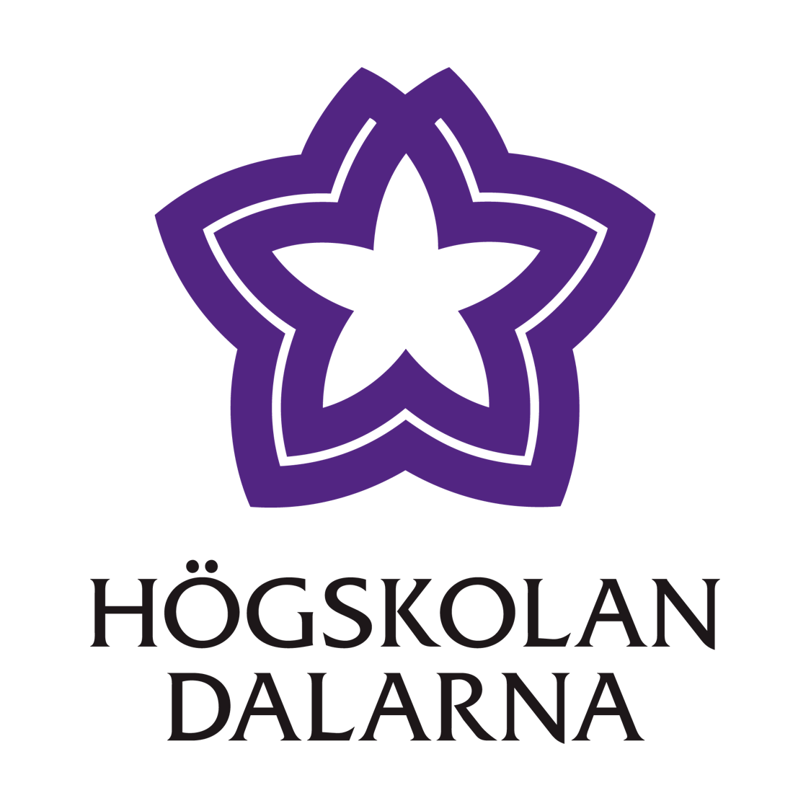

Main Tasks in PROMISE
Expertise and Research Focus
- Smart and sustainable mobility solutions (shared mobilities, e-mobility, autonomous mobility) and impact evaluation
- Logistics (last-mile, data sharing) and town center revitalization
Key Personnel
Associate Prof. Mia Xiaoyun Zhao
Project Coordinator
Associate Prof. Zhao specializes in smart and sustainable mobility solutions (shared mobilities, e-mobility, autonomous mobility) and impact evaluation.
ORCID: 0000-0002-3342-0859Dr. Madelen Lagin
Senior Researcher
Dr. Lagin is specialized in logistics (last-mile, data sharing) and town center revitalization (stakeholder contribution, cooperation).
ORCID: 0000-0002-4982-3994Selected Publications
- Zhao, X., Andruetto C., Vaddadi, B., & Pernestål, A. (2021). Potential values of MaaS impacts in future scenarios. Journal of Urban Mobility, Volume 1. DOI
- Zhao, X., Susilo, Y., & Pernestål, A. (2022). The dynamic and long-term changes of automated bus service adoption. Transportation Research Part A: Policy and Practice, 155, 450-463. DOI
- Lagin, M., Håkansson, J., Nordström, C., Nyberg, R.G. & Öberg, C. (2022). Last-mile logistics of perishable products. International Journal of Retail & Distribution Management, Vol. 50 No. 13, pp. 116-139. DOI